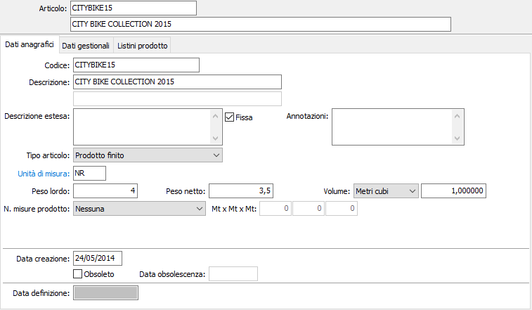

Dati anagrafici

CODICE: codice alfanumerico di 22 caratteri, a libera scelta dell’utente, che individua l’articolo provvisorio. Sul campo sono attive le funzioni di ricerca sulla tabella stessa.
DESCRIZIONE 1: campo alfanumerico di 60 caratteri per inserire la prima descrizione dell’articolo provvisorio.
DESCRIZIONE 2: campo alfanumerico di 60 caratteri per inserire la seconda descrizione dell’articolo provvisorio.
DESCRIZIONE ESTESA: campo note per inserire la descrizione completa, ove necessario, dell’articolo provvisorio. Se previsto dalla configurazione, questa descrizione estesa può essere stampata sui documenti in aggiunta alla descrizione dell’articolo provvisorio.
FISSA: definisce se la descrizione estesa è modificabile dai documenti (casella vuota), oppure è fissa (casella con segno di spunta).
ANNOTAZIONI: campo note interne.
TIPO ARTICOLO: definisce la modalità di ingresso del prodotto provvisorio; materia prima, semilavorato, prodotto finito, lavorazione, prestazione servizio. Il valore “Prestazione/servizio” identifica i codici delle prestazioni o servizi che, pur codificati per comodità di inserimento nei documenti, non movimentano il magazzino e non vengono trattati dalle statistiche di magazzino.
UNITÀ MISURA 1: codice alfanumerico, presente in tabella Unità di misura, che definisce l’unità di misura primaria dell’articolo provvisorio con cui vengono gestite le quantità di magazzino. Sul campo sono attive le funzioni di ricerca e di manutenzione della tabella.
PESO LORDO: campo numerico per indicare il peso lordo in kg dell'articolo riferito all'unità di misura 1. Serve per la stampa dei Ddt.
PESO NETTO: campo numerico per indicare il peso netto in kg dell'articolo riferito all'unità di misura 1. Serve per la stampa dei Ddt.
VOLUME: I 2 campi indicano rispettivamente l’unità di misura ed il volume dell’articolo. L’unità di misura può essere in centimetri cubi o in metri cubi. Il volume è un campo numerico decimale.
N. MISURE PRODOTTO: combo box per indicare se il prodotto provvisorio è gestito a metri lineari, metri quadrati o metri cubi in relazione alle dimensioni da utilizzare.
MISURE PRODOTTO: campi numerici abilitati in base al valore del campo precedente; indicare le misure del prodotto che saranno poi utilizzate nell'inserimento dei documenti, se attiva la gestione, come proposta.
DATA CREAZIONE: indica la data in cui l'articolo provvisorio è stato caricato. Al momento del caricamento di un nuovo record in questo campo viene proposta la data di sistema.
OBSOLETO: check box. Se contiene la spunta, indica che il prodotto provvisorio è obsoleto.
DATA OBSOLESCENZA: indica la data in cui l'articolo provvisorio è stato dichiarato obsoleto.
DATA DEFINIZIONE: indica l’eventuale data di definizione dell’articolo provvisorio in definitivo, questo campo viene registrato al momento della definizione.